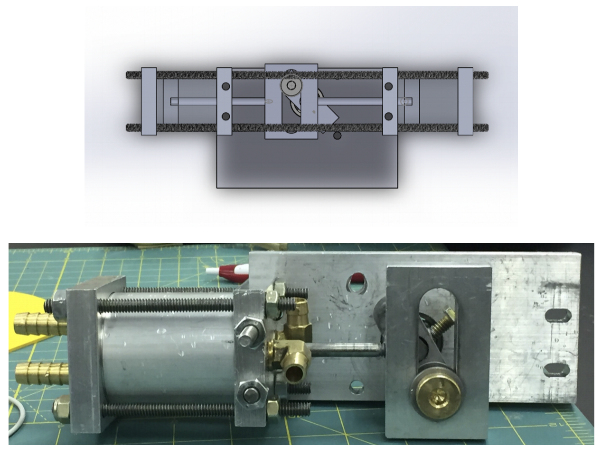

Wind Pump Design
This project was to design and manufacture a water pump driven by wind turbine. The requirement was to pump water from an input reservoir with water level at the drive shift to an elevation of at least 1.5 m at a rate of 1 L/min. I worked on mechanical analysis of the design, prototyping, machining parts, and assembling the pump.
Design description
We were able to design and machine a double acting piston pump with scotch yoke. The drive shaft connects to a rectangular piece and is held in place by a machine screw. A shoulder screw with a bushing on it is threaded into the rectangular piece that attaches to the drive shaft. The bushing then turns around in the scotch yoke, providing a smooth gliding action from side to side. End-caps of the piston were designed to ensure no leak in design and alignment with push rods. The two rods extend from the scotch yoke to the two inner end-caps and the entire assembly is held together with ¼”-20 steel rods of varying lengths with nuts.
Following images show the final CAD of the design along with the final product and its machining/designing process. The final pump weight was 1.171 kg and on 1122 rpm, it was able to pump 4 liters in 1 minute. This makes the wind pump efficiency 3.42 L/min/kg.
